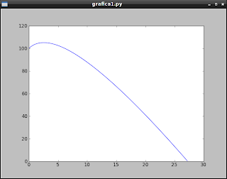

Generando una gráfica en python con matplotlib con PyQT. Parte 11
Posted on lun 06 junio 2011 in Tutorial Python • 2 min read
A partir de este artículo las gráficas con matplotlib se explicarán con la librería gráfica PyQT. Para ello en otros artículos se reiniciará la serie sobre pyQT.
En este artículo se tomará las funciones creadas en el artículo anterior para calcular la trayectoria del lanzamiento de proyectil y se creará un objeto basandose en las librerías PyQT.
#!/usr/bin/env python
#Para los argumentos desde la linea de comandos
import sys
# Importar GUI de PyQT
from PyQt4 import QtGui
# Importar numpy para la creacion de la imagen
import numpy as np
# Se importa el objeto Figure de Matplotlib
from matplotlib.figure import Figure
#Se importa QT4Agg como Canvas.
from matplotlib.backends.backend_qt4agg \
import FigureCanvasQTAgg as FigureCanvas
#Se define la funcion x(t) de la ecuacion de posicion (movimiento horizontal)
def fx (t):
#Se define la posicion inicial en 0
x0 = 0
#Se define la velocidad inicial en 2 mts/seg
v0x = 2
#Se define la aceleracion en 1 mts/seg^2
ax = 1
#Se hace el calculo de la posicion con respecto al tiempo
x = x0 + v0x*t + 0.5*ax*t**2
return x
#Se define la funcion y(t) de la ecuacion de posicion altura
def fy(t):
#Se define la altura inicial en 100 mts
y0 = 100
#Se define la velocidad inicial en 10 mts/seg
v0y = 10
#Se define la gravedad en 9.81 mts/seg^2
g = 9.81
#Se realiza el calculo de l posicion en funcion del tiempo
y = y0 + v0y*t - 0.5*g*t**2
return y
class Lienzo(FigureCanvas):
"""Clase que represente a FigureCanvas"""
def __init__(self):
# Codigo para generar la grafica
self.figura = Figure()
self.ejes = self.figura.add_subplot(111)
self.tiempo = np.arange(0.0, 5.65, 0.01)
#Calculo de la posicion en el eje X y Y
self.x = fx(self.tiempo)
self.y = fy(self.tiempo)
#Se crea la grafica
self.ejes.plot(self.x, self.y)
# inicializar el lienzo donde se crea la grafica.
FigureCanvas.__init__(self, self.figura)
if __name__ == '__main__':
# Se crea el GUI de la aplicacion
qApp = QtGui.QApplication(sys.argv)
# Se crea el widget para matplotlib
mpl = Lienzo()
# Se muestra el widget.
mpl.show()
#Se inicia el lazo de ejecucion de QT.
sys.exit(qApp.exec_())
La siguiente figura muestra la gráfica de la trayectoria del lanzamiento de proyectil.

===
¡Haz tu donativo! Si te gustó el artículo puedes realizar un donativo con Bitcoin (BTC) usando la billetera digital de tu preferencia a la siguiente dirección: 17MtNybhdkA9GV3UNS6BTwPcuhjXoPrSzV
O Escaneando el código QR desde billetera: